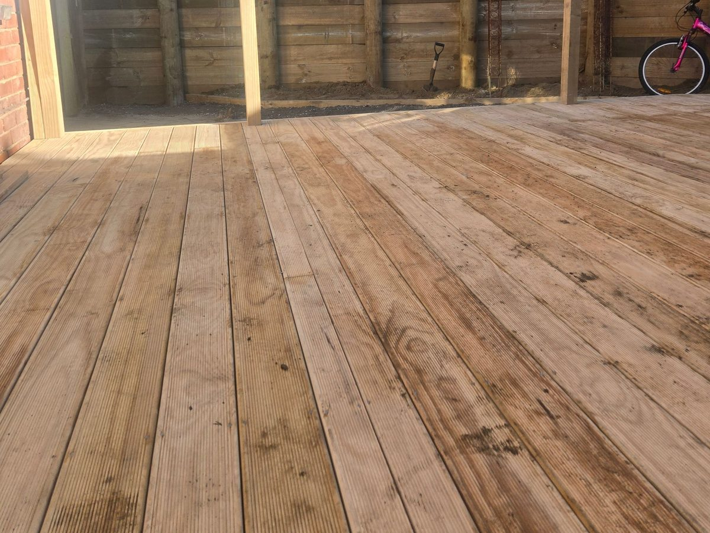

Decks
A deck that suits the section, not just the brochure.
On flat ground a deck is simple. On a Wellington slope, the piles, bracing, barrier and consent all change. We build both.
Ground-level pineTreated pine on piles, close to the ground. The most affordable way to extend the living area outside.
Kwila or compositeHardwood kwila for the classic look, or composite boards for low maintenance. Same framing underneath.
Hillside with balustradeRaised decks on sloping sections, with a balustrade where the fall is 1 m or more. Often needs consent.
Deck replacementsOld boards stripped, framing and piles checked, and anything rotten or loose replaced before new boards go on.
Fences, screens & gates
Privacy, shelter and a boundary that stays put.
- Boundary fences. Paling, board-and-batten and solid timber fences, with posts concreted in and set to the line.
- Privacy screens. Screens around decks, spas and outdoor areas, built to take the wind.
- Garden fencing. Lower fences and edging to keep kids and dogs in and keep the garden tidy.
- Gates. Pedestrian and driveway gates, hung square so they swing and latch properly for years.
Consents
The numbers that decide whether you need council.
We check these at the site visit, before you commit to a design.
1.5 mDeck consent testA deck is exempt if it's not possible to fall more than 1.5 m, even if it collapses. Fall height counts, not deck height, so hillside decks often need consent.
1 mBarrier requiredWhere anyone could fall 1 m or more, the Building Code (F4) needs a barrier or balustrade.
2.5 mFence heightFences up to 2.5 m are exempt from building consent. Pool fences are not. District plans may cap boundary fences at around 2 m.
SharedFencing Act 1978Neighbours generally share the cost of an adequate boundary fence. The Act sets out a notice process if you can't agree.
Indicative pricing
What a deck costs in Wellington.
Per square metre, by type. Height, slope, access and the barrier are what move it.
Ground-level pine deck
$350–550per m²
- Treated pine framing and boards
- Close to the ground
Kwila or composite deck
$500–900per m²
- Hardwood or low-maintenance boards
- Same framing standard
Hillside deck with balustrade
$700–1,200per m²
- Raised on a sloping section
- Barrier where fall is 1 m+
Engineered steep-site deck
$900–1,500+per m²
- Engineer's design and consent
- For the steepest sections
Indicative Wellington-region ranges for 2026, GST inclusive. Not a quote. Fences, screens and gates are priced per metre on site.
Recent decks & fences
Decks and fences we've built lately.

Photo · Ground-level pine deck Photo · Boundary fence
Photo · Boundary fence Photo · Hillside deck & balustrade
Photo · Hillside deck & balustrade